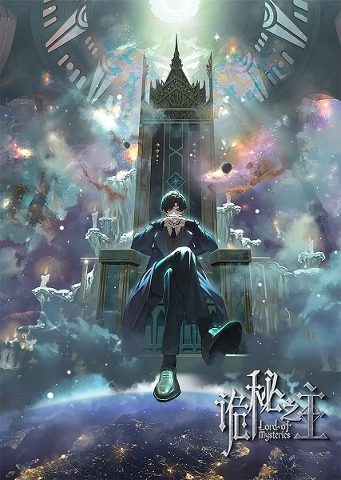
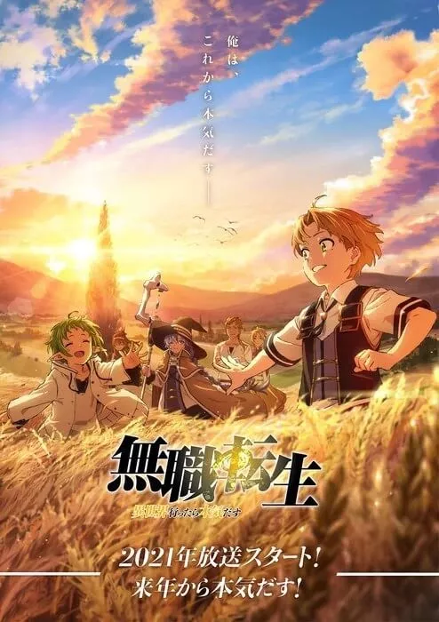
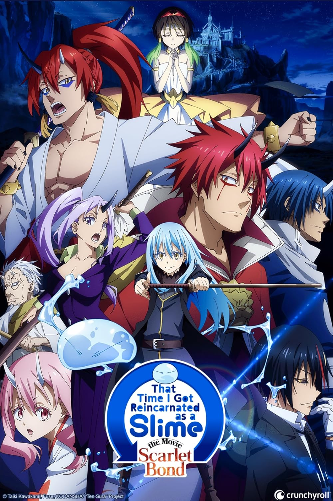
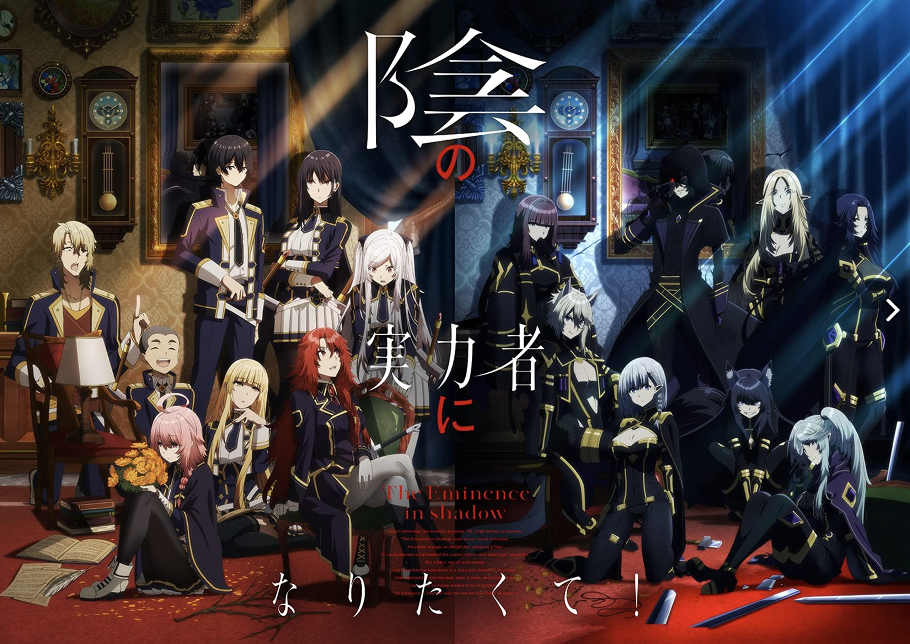
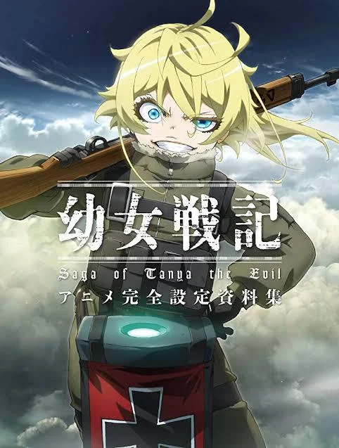
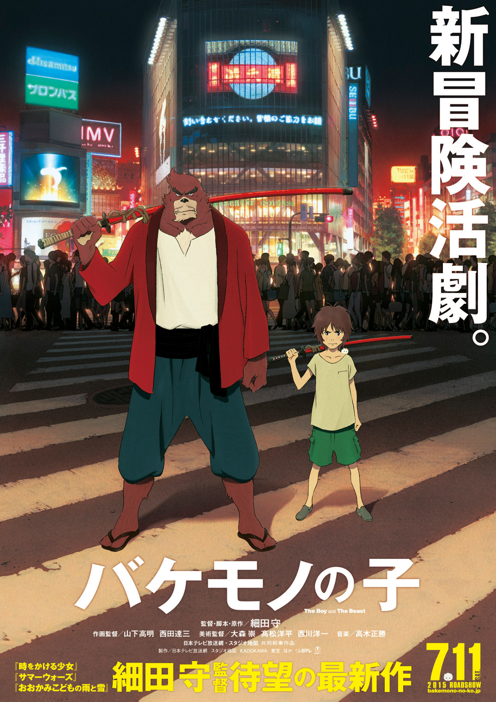
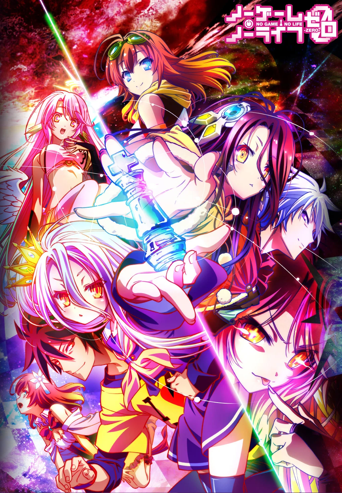
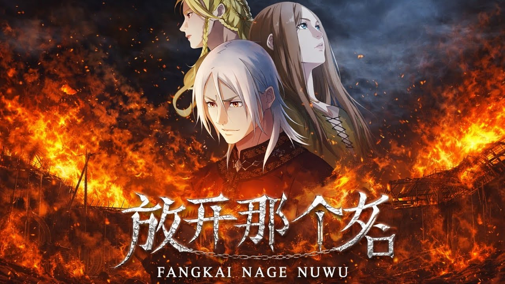

O gênero isekai nos animes é caracterizado por histórias em que o protagonista é transportado, reencarnado ou preso em um
mundo diferente do seu — geralmente um universo de fantasia com magia, criaturas míticas e regras próprias. Esse “outro
mundo” pode variar desde reinos medievais até jogos virtuais, dimensões paralelas ou realidades completamente desconhecidas.
Na maioria das vezes, o personagem principal chega a esse novo mundo com alguma vantagem especial, como poderes únicos,
conhecimento do mundo moderno ou habilidades extraordinárias, o que influencia diretamente sua jornada. A narrativa costuma
acompanhar sua adaptação, os desafios enfrentados e as relações que ele constrói ao longo do caminho.
O isekai é frequentemente combinado com gêneros como ação, aventura, comédia e romance, podendo apresentar tanto histórias
leves e divertidas quanto tramas mais sérias e dramáticas. Além disso, muitos animes exploram temas como escapismo,
identidade, superação e a busca por um novo propósito de vida.










fonte:
Melhores animes isekai.